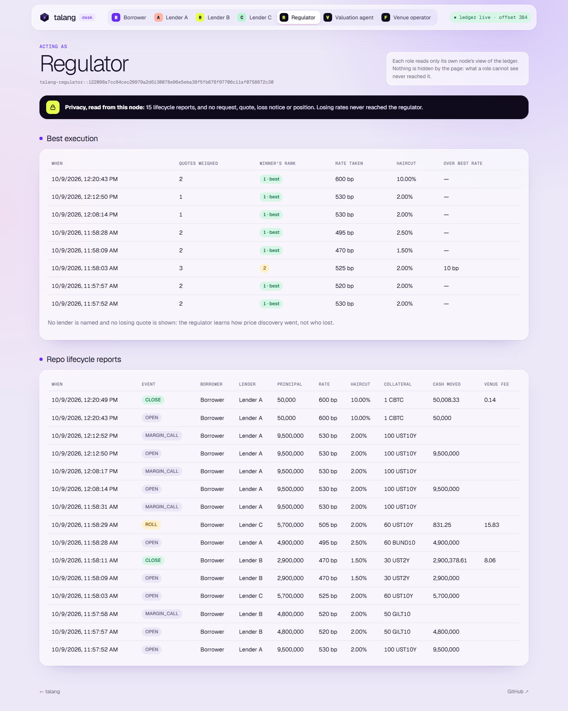

Sealed-bid repo on Canton
A borrower asks a panel of lenders for cash against collateral. Each lender's rate and haircut reach the borrower and nobody else, and the repo then lives on the ledger until it is repurchased.
talang-desk.vercel.app github.com/PugarHuda/talang
5 → 4
A fund asks five dealers for cash against a block of Treasuries. All five learn it needs liquidity and what it holds. The four that lose keep that knowledge.
rate
Large holders split requests across days or stay with one dealer to avoid the leak, and pay for it in rate.
Margin calls argued from each side's own spreadsheet and price, substitutions by email, the regulator's report rebuilt after the fact.
Source: BRIEF.md. No user interviews are claimed; the validation log there records only conversations that happened, and is empty.
On Canton a contract is sent only to its stakeholders' nodes. A sealed quote has two, so it never reaches a rival lender or the regulator. Not hidden by the page: never received.
The quote the borrower takes opens a repo that the contract runs until it is repurchased.
| Pain | What the ledger enforces |
|---|---|
| Quotes that cannot be funded | Full principal locked behind the quote |
| Settlement risk at open | Collateral pledged, cash delivered, losers refunded: one transaction |
| Disputed margin calls | Units due from a signed mark; refused while covered |
| Substitution by email | Lender consent, and only if the substitute covers at a fresh mark |
| Rolling = close + reopen | Interest so far paid, new rate from today |
| Default | After an unanswered call or maturity, pledge to the lender |
Borrower invites a panel. Only invited lenders see it, and it carries no rate.
Lender locks the full principal: desk escrow or a CIP-0056 allocation. Rivals and the regulator never receive it.
Opening leg atomic: collateral pledged, cash delivered, losing quotes refunded unrevealed.
Each loser gets its rank and nothing else. The regulator gets quotes weighed, winner's rank, gap to best in bp. No lender named.

The demo case on the seeded ledger: the cheapest rate's haircut does not cover, so the borrower takes rank 2. Regulator: 3 quotes weighed, winner rank 2, 10 bp over best. The losing lender: rank 3 of 3. Neither learns a losing rate or a name.
| Node | Receives | Never receives |
|---|---|---|
| Borrower | Its requests; every quote made to it, ranked with coverage | — |
| Lender A / B / C | Requests it was invited to; its own quote; its own loss notice (rank only) | Rival quotes: 0 on any lender node · other lenders' loss notices: 0 |
| Regulator | RepoReport for every lifecycle event, BestExecution records | Requests 0 · quotes 0 · loss notices 0 |
Checked on every run: privacy_check from each MCP desk in npm run e2e:mcp, and in page and API by npm run qa:desk. Token rail on a participant: lender B's node held 0 rival quotes.
Marks come from a valuation committee, a decentralized party. Each mark is a GovernableAction on BitSafe's own GovernanceRules, DARs used unmodified. A lender can be a k-of-n syndicate the same way.
Committee onboarded through DecMan, hosted on all three nodes, threshold 2.
Participant 3 stopped: members on nodes 1 and 2 publish UST10Y 97,500.
Participants 2 and 3 stopped: publish stops at the first confirmation.
One command: bash localnet/demo.sh reset. In DecMan's own UI: media/decman-demo-captioned.mp4. Governance on DevNet: not yet waiting on act-as rights for the committee's parties from NODERS (grant refused 403).
| Step on the NODERS DevNet participant | Update id |
|---|---|
| Faucet's 1.0 CBTC transfer offer accepted through the registry | 122085841bcd…f6c5 |
CBTC allocated to lender A via the registry's AllocationFactory | 1220c89b7d65…d45c |
| Request: 50 USDC against 0.001 CBTC, 1 day | 1220f040d4b6…ee2e |
| Sealed quote, principal escrowed | 12205686d3f2…49f9 |
| Award: USDC to borrower, CBTC allocation held | 1220dde0a7ac…8746 |
| Repurchase: allocation cancelled via the registry | 1220db50b682…24dd |
Choice context and disclosed contracts come from the registry's off-ledger API (lib/registry.mjs). Borrower holds 1 CBTC again after repurchase. 7 of 7 steps, 9 October.
Cash leg here is desk USDC. Both legs in real tokens, same participant: Canton Coin cash (DevNet tap, quote funded by an Amulet allocation through the Scan registry) and CBTC collateral; award, repurchase, CBTC home. 12 of 12 steps, token-repo-amulet-cbtc-devnet.json.
USDCx on DevNet: not yet no DevNet USDCx registry or faucet documented.
Grofty signs only standard token operations on its own participant, so Talang does not route Daml commands through it. A desk role bound to a wallet acts only after the wallet signs a single-use challenge naming the exact command (CIP-0103 signMessage).
A single-use nonce that names the exact desk command the role is about to submit.
api/wallet-verify.mjs checks nonce, signer, Ed25519 / P-256 signature, and that the key's fingerprint is the party's namespace. Then submits.
The borrower can verify which wallet key sealed a lender's quote; rival lenders see nothing. Venue fee payable in USDCx or CC on TestNet / MainNet.
Verified with a stub wallet holding a real Ed25519 key against the local ledger. With a live Grofty wallet: not yet
An MCP agent reads only its party's node. A lender's agent never sees a rival's rate; the regulator's sees reports and nothing upstream. Every action is re-checked by the contract.
portfolio · open_requests · quote · call_margin · review_substitution · offer_roll · loss_history · privacy_check
quotes (ranked, with coverage) · award ("best" = cheapest covered) · book · accept_roll · privacy_check
lifecycle · best_execution · privacy_check
npm run e2e:mcp: 33 of 33 checks on a Canton participant, every desk end to end, privacy read from each node. Also in CI.
10 bp
per annum of principal, ACT/360, collected inside the repurchase and on every roll.
9.5M repo held 60 days → 1,583.33 to the venue
AllocationRequest, under the operator's standing VenueAgreement. On a participant: 50,008.33 USDCx to the lender, 0.14 to the venue.venueFeeOnRepurchase, tokenLifecycle. No revenue yet.22 / 22
Daml scripts: lifecycle, refusals, tokens, BitSafe
33 / 33
MCP end-to-end checks, local sandbox and CI
29 / 29
Playwright desk QA, every role and button
45 / 45
Read-only proxy checks: no secret, no submit
| Run | Where | Result |
|---|---|---|
talang-repo 1.0.0 vetted and seeded | NODERS DevNet hackcanton-devnet-3 | Hosted desk reads it live |
| CBTC rail | NODERS DevNet, DA Utility registry | 7 / 7 steps, update ids recorded |
| Canton Coin cash + CBTC collateral | NODERS DevNet, Scan + DA Utility registries | 12 / 12 steps, update ids recorded |
| BitSafe 2-of-3 marks · node offline | DecMan LocalNet, 3 participants | 8 / 8 · 6 / 6 steps |
| CIP-0056 token rail · price oracle | Local Canton 3.4.11 participant | 8 / 8 · 4 / 4 steps |
CI: GitHub Actions run 37917378702, commit 045f9f7. Evidence JSON in docs/evidence/. Users or pilots: none yet.
| Public EVM chain | Privacy L2 / object chain | Canton | |
|---|---|---|---|
| Who sees a lender's rate | Everyone: calldata and mempool | Hidden behind ZK, encryption or an enclave the desk builds and audits | The borrower who asked. No other stakeholder, no other node receives it |
| Opening leg | Atomic, both amounts public | Atomic on its chain; other issuers' assets via a bridge | One Daml transaction across both legs, incl. CIP-0056 assets from separate registries |
| Regulator view | Same public data, or an off-chain report | Viewing keys or a separate channel | Observer on RepoReport and BestExecution; absent from quotes |
| k-of-n governance | Multisig; votes and prices public | Multisig or committee per chain | BitSafe GovernanceRules on a party hosted on several nodes; survives one of three down |
One borrower, two lenders run their real collateral list and rates without moving value. Measure request-to-award time, quotes per request, calls the contract would issue.
Collateral from one tokenized-bond or CBTC registry, cash in USDCx, both through CIP-0056. Ticket size capped.
Committee run by independent price providers as a BitSafe decentralized party; an auditor runs an observer node.
not yet Governance committee on DevNet · 1.1.0 on DevNet · USDCx on DevNet · live Grofty wallet on TestNet · any pilot user. Pilot success: award in under 10 minutes, two or more lenders quoting, zero rival quotes on any lender node.
Builder. Prior work: Tirai, a confidential multi-dealer RFQ desk on Canton (2nd place, HackCanton Season 2). Talang reuses its escrow-on-quote and CIP-0056 settlement patterns; first Talang commit 2 October 2026.
github.com/PugarHuda
NODERS act-as rights for the committee's parties, to run governance on DevNet
Pilot one borrower and two lenders for a two-week shadow book
Registries a USDCx registry on DevNet, a tokenized-bond or T-bill registry
Prices · wallet a price provider to sit on the committee; a Grofty TestNet session